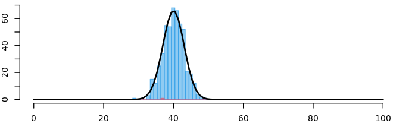

Chapter 4 Limit theorems
We’ve already seen that empirical\(\not=\)theoretical, at least not entirely. How then are we supposed to understand anything about the population based on a sample?
Well, fortunately there are mathematical guarantees that at least in the limit, i.e. as our sample size gets larger and larger, we get closer and closer to the truth.
In this chapter we will learn:
- What two important limit theorems there are and
- what implications arise for our analyses.
4.1 Strong law of large numbers 💪
Let \(X_1,X_2,\ldots\) be a sequence of independent, identically distributed random variables with \(\mathbb E(X_i)=\mu\) and \(\text{Var}(X_i)=\sigma^2<\infty\). Then the following applies: \[\begin{equation*} \lim_{n\rightarrow\infty} \frac{1}{n}\sum _{i=1}^n X_i =\mathbb E(X)=\mu\quad\text{ almost sure}. \end{equation*}\] “almost sure” is equivalent to “with probability \(1\)”.
Example 4.1 (empirical frequencies) Using independent repetitions of a stochastic experiment, estimate probability \(\mathbb P(A)\) for the occurrence of an event \(A,\) given the sample \(x_1, x_2, \ldots, x_k,\ldots\)
Let \(\displaystyle X_k =\begin{cases}1,&\text{ for } x_k\in A\\0 &\text{ for } x_k\not\in A\end{cases}\) independent and identically distributed - iid - random variables.
- \(\displaystyle\frac{1}{n} \sum_{k=1}^n X_k =h_n(A)=\) relative frequency of occurrence of \(A\)
- \(\mathbb E(X_k)=\mathbb P(A)\) for all \(k\)
According to the law of large numbers: \[h_n(A) \rightarrow \mathbb P(A)\text{ almost sure}.\]
With the strong Law of Large Numbers (LLN) we have a guarantee that our sample based estimators eventually converge to the population values when \(n\rightarrow\infty\) (asymptotically).
However, as we will see, the values of our estimators (the estimates) depend on the sample. So, what about the distribution of the estimators? The following Central limit theorem helps us to determine the approximative distribution.
4.2 Central limit theorem
The Central Limit Theorem (ZGS) states that this sum of independent and identically distributed (iid) random variables is approximately normally distributed. On this basis we can draw statistical conclusions, e.g. about the distribution of the sample mean over all possible sample realizations!
Let \(X_1,X_2, \ldots\) be independent identically distributed random variables with \[\begin{equation*} \mathbb E(X_i)=\mu\quad\text{ and }\quad \text{Var}(X_i)=\sigma^2\text{ with } 0<\sigma^2<\infty. \end{equation*}\]
The following applies to the sum of the random variables: \[\begin{equation*} \color{blue}{\mathbb E\left(\sum _{i=1}^n X_i\right)}=\color{blue}{n\mu}\quad\text{ and }\quad \color{red}{\text{Var}\left(\sum_{i=1}^n X_i\right)}=\color{red}{n\sigma^2}. \end{equation*}\]
Then the distribution function \(F_n(z)=\mathbb P(Z_n\leq z)\) of the standardized sum:
\[ Z_n = \frac{\sum_{i=1}^n X_i - \color{blue}{n\cdot \mu}}{\sqrt{\color{red}{n\cdot\sigma^2}}} %= \sum_{i=1}^n \frac{X_i-\mu}{\sigma/{\sqrt{n}}} \] converges for \(n\rightarrow\infty\) to \(N(z)\) of the standard normal distribution:
\[\begin{equation*} F_n(z)\rightarrow N(z) \quad \text{ for }n\rightarrow\infty. \end{equation*}\]
That is: \[Z_n\stackrel{a}{\sim} N(0,1).\]
It follows that for sufficiently large \(n\) the mean is approximately normally distributed: \[\begin{equation*} \frac{1}{n}\sum_{i=1}^n X_i\stackrel{a}{\sim} N(\mu,\sigma^2/n). \end{equation*}\]
How to compute the mean and the variance for the sample mean
Consider a random sample \(X_1,X_2,\ldots,X_n\) of iid random variables with \(\mathbb E(X_i)=\mu\) and \(\text{Var}(X_i)=\sigma^2\) for all \(i=1,\ldots, n.\)
The sample mean is: \[\overline X = \frac 1n\sum_{i=1}^nX_i.\]
Using the properties of the expected value: \[\begin{align} \mathbb E(\overline X) &= \mathbb E\left(\frac 1n\sum_{i=1}^nX_i\right) = \frac 1n\mathbb E\left(\sum_{i=1}^nX_i\right)\\ &= \frac 1n\sum_{i=1}^n\underbrace{\mathbb E\left(X_i\right)}_{=\mu}=\frac 1n \sum_{i=1}^n\mu\\ &= \frac 1n \cdot n\cdot \mu = \mu. \end{align}\]
\[\begin{align} \text{Var}(\overline X) &= \text{Var}\left(\frac 1n\sum_{i=1}^nX_i\right) = \left(\frac 1n\right)^\color{red}{2}\cdot\text{Var}\left(\sum_{i=1}^nX_i\right)\\ &\stackrel{X_i iid}{=} \frac {1^2}{n^2}\cdot \sum_{i=1}^n\underbrace{\text{Var}\left(X_i\right)}_{=\sigma^2}=\frac 1{n^{2}} \sum_{i=1}^n\sigma^2\\ &= \frac 1{n^2} \cdot n\cdot \sigma^2 = \frac{\sigma^2}{n}. \end{align}\]Example 4.2 (Average time in the online shop) In examples 2.6 and 2.7 we have modelled \(X=\)“time in the online shop” as a continuous random variable with the density:
\[ f(x) = \begin{cases}0,001\cdot x , &\text{ für } 0\leq x\leq 20,\\ 0,025 -0,00025\cdot x, &\text{ für } 20< x\leq 100.\end{cases} \]
Figure 4.1: Density function of X=time in the online shop
and computed:
\[\begin{align} \mathbb E(X) &= 40,\\ \text{Var}(X) &= 466,6667. \end{align}\]
Now we draw a pair of samples of size \(n\) from this distribution and in each sample realization we take the average of the values. The ZGS states that (although the individual times are obviously not normally distributed) the distribution of the (standardized) average will get closer and closer to the (standard) normal distribution as \(n\) increases.
That is, \(\bar X=\frac 1n(X_1 + \ldots + X_n)\) mit \(\mathbb E(\bar X) = n\cdot \frac 1n\cdot \mathbb E(X) = 40\) und \(\text{Var}(\bar X)=n\cdot\frac1{n^2}\cdot \text{Var}(X) = \frac{466,6667}{n}.\)
For \(n=50\) holds:
\[ \bar X\stackrel{a}{\sim} N(40;9,3333) \]
and
\(\mathbb P(35\leq\bar X\leq 45)\stackrel{\sim}{=}N(\frac{45-40}{\sqrt{9,3333}}) - N(\frac{35-40}{\sqrt{9,3333}}) =0,8983\)

and
.